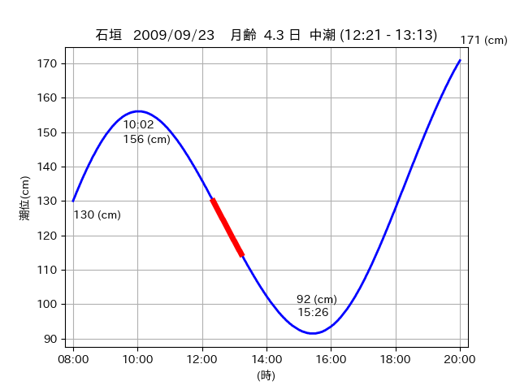

<!DOCTYPE html>
<html>
<head>
    
    <meta http-equiv="content-type" content="text/html; charset=UTF-8" />
    
        <script>
            L_NO_TOUCH = false;
            L_DISABLE_3D = false;
        </script>
    
    <style>html, body {width: 100%;height: 100%;margin: 0;padding: 0;}</style>
    <style>#map {position:absolute;top:0;bottom:0;right:0;left:0;}</style>
    <script src="https://cdn.jsdelivr.net/npm/leaflet@1.9.3/dist/leaflet.js"></script>
    <script src="https://code.jquery.com/jquery-3.7.1.min.js"></script>
    <script src="https://cdn.jsdelivr.net/npm/bootstrap@5.2.2/dist/js/bootstrap.bundle.min.js"></script>
    <script src="https://cdnjs.cloudflare.com/ajax/libs/Leaflet.awesome-markers/2.0.2/leaflet.awesome-markers.js"></script>
    <link rel="stylesheet" href="https://cdn.jsdelivr.net/npm/leaflet@1.9.3/dist/leaflet.css"/>
    <link rel="stylesheet" href="https://cdn.jsdelivr.net/npm/bootstrap@5.2.2/dist/css/bootstrap.min.css"/>
    <link rel="stylesheet" href="https://netdna.bootstrapcdn.com/bootstrap/3.0.0/css/bootstrap-glyphicons.css"/>
    <link rel="stylesheet" href="https://cdn.jsdelivr.net/npm/@fortawesome/fontawesome-free@6.2.0/css/all.min.css"/>
    <link rel="stylesheet" href="https://cdnjs.cloudflare.com/ajax/libs/Leaflet.awesome-markers/2.0.2/leaflet.awesome-markers.css"/>
    <link rel="stylesheet" href="https://cdn.jsdelivr.net/gh/python-visualization/folium/folium/templates/leaflet.awesome.rotate.min.css"/>
    
            <meta name="viewport" content="width=device-width,
                initial-scale=1.0, maximum-scale=1.0, user-scalable=no" />
            <style>
                #map_1a50ab26ae9386480b7861cc3dad50fa {
                    position: relative;
                    width: 2048.0px;
                    height: 1600.0px;
                    left: 0.0%;
                    top: 0.0%;
                }
                .leaflet-container { font-size: 1rem; }
            </style>
        
</head>
<body>
    
    
            <div class="folium-map" id="map_1a50ab26ae9386480b7861cc3dad50fa" ></div>
        
</body>
<script>
    
    
            var map_1a50ab26ae9386480b7861cc3dad50fa = L.map(
                "map_1a50ab26ae9386480b7861cc3dad50fa",
                {
                    center: [24.315, 123.665],
                    crs: L.CRS.EPSG3857,
                    ...{
  "zoom": 12,
  "zoomControl": true,
  "preferCanvas": false,
}

                }
            );

            

        
    
            var tile_layer_66b164b2e7ea1eb214d57a9c1a1d3b05 = L.tileLayer(
                "https://cyberjapandata.gsi.go.jp/xyz/seamlessphoto/{z}/{x}/{y}.jpg",
                {
  "minZoom": 0,
  "maxZoom": 18,
  "maxNativeZoom": 18,
  "noWrap": false,
  "attribution": "\u5730\u7406\u9662\u5730\u56f3",
  "subdomains": "abc",
  "detectRetina": false,
  "tms": false,
  "opacity": 1,
}

            );
        
    
            tile_layer_66b164b2e7ea1eb214d57a9c1a1d3b05.addTo(map_1a50ab26ae9386480b7861cc3dad50fa);
        
    
            var marker_fefb83682a729a067fb6c1dde641d42a = L.marker(
                [24.3779, 123.7087],
                {
}
            ).addTo(map_1a50ab26ae9386480b7861cc3dad50fa);
        
    
            var icon_51ef2b5447bac4349207712069769a27 = L.AwesomeMarkers.icon(
                {
  "markerColor": "orange",
  "iconColor": "white",
  "icon": "info-sign",
  "prefix": "glyphicon",
  "extraClasses": "fa-rotate-0",
}
            );
        
    
        var popup_7ef9c5f7356e475ecad19ad5bb384b44 = L.popup({
  "maxWidth": "100%",
});

        
            
                var html_d2b181801612d92966b9ab2f6e3f0e26 = $(`<div id="html_d2b181801612d92966b9ab2f6e3f0e26" style="width: 100.0%; height: 100.0%;"><table><tr><td></td></tr><tr><td><center>20090923 No.1 </center></table></td></tr></table</div>`)[0];
                popup_7ef9c5f7356e475ecad19ad5bb384b44.setContent(html_d2b181801612d92966b9ab2f6e3f0e26);
            
        

        marker_fefb83682a729a067fb6c1dde641d42a.bindPopup(popup_7ef9c5f7356e475ecad19ad5bb384b44)
        ;

        
    
    
                marker_fefb83682a729a067fb6c1dde641d42a.setIcon(icon_51ef2b5447bac4349207712069769a27);
            
    
            var poly_line_b393b7ba33d7bbf9c8e93d5f233b39d1 = L.polyline(
                [[24.3779, 123.7087], [24.3834, 123.7116]],
                {"bubblingMouseEvents": true, "color": "#FF00FF", "dashArray": null, "dashOffset": null, "fill": false, "fillColor": "#FF00FF", "fillOpacity": 0.2, "fillRule": "evenodd", "lineCap": "round", "lineJoin": "round", "noClip": false, "opacity": 1.0, "smoothFactor": 1.0, "stroke": true, "weight": 3}
            ).addTo(map_1a50ab26ae9386480b7861cc3dad50fa);
        
    
            var marker_c71cdda50befa306e243a7a242b5970c = L.marker(
                [24.3123, 123.6612],
                {
}
            ).addTo(map_1a50ab26ae9386480b7861cc3dad50fa);
        
    
            var icon_ad19fe612aeea6f510e3779e34a67fb8 = L.AwesomeMarkers.icon(
                {
  "markerColor": "orange",
  "iconColor": "white",
  "icon": "info-sign",
  "prefix": "glyphicon",
  "extraClasses": "fa-rotate-0",
}
            );
        
    
        var popup_9af365dbb9a811cdc81f94e62f3abcd8 = L.popup({
  "maxWidth": "100%",
});

        
            
                var html_0ef2a611a8eb01f2f08eb741b7e9cd9e = $(`<div id="html_0ef2a611a8eb01f2f08eb741b7e9cd9e" style="width: 100.0%; height: 100.0%;"><table><tr><td></td></tr><tr><td><center>20090923 No.2 </center></table></td></tr></table</div>`)[0];
                popup_9af365dbb9a811cdc81f94e62f3abcd8.setContent(html_0ef2a611a8eb01f2f08eb741b7e9cd9e);
            
        

        marker_c71cdda50befa306e243a7a242b5970c.bindPopup(popup_9af365dbb9a811cdc81f94e62f3abcd8)
        ;

        
    
    
                marker_c71cdda50befa306e243a7a242b5970c.setIcon(icon_ad19fe612aeea6f510e3779e34a67fb8);
            
    
            var poly_line_899c920ae94f6e78efb758b48e33dff6 = L.polyline(
                [[24.3123, 123.6612], [24.3141, 123.6623]],
                {"bubblingMouseEvents": true, "color": "#FF00FF", "dashArray": null, "dashOffset": null, "fill": false, "fillColor": "#FF00FF", "fillOpacity": 0.2, "fillRule": "evenodd", "lineCap": "round", "lineJoin": "round", "noClip": false, "opacity": 1.0, "smoothFactor": 1.0, "stroke": true, "weight": 3}
            ).addTo(map_1a50ab26ae9386480b7861cc3dad50fa);
        
    
            var marker_102cde63f1dd71b496db7851f01c6a74 = L.marker(
                [24.3161, 123.6673],
                {
}
            ).addTo(map_1a50ab26ae9386480b7861cc3dad50fa);
        
    
            var icon_cfcb0c16ba09528d2d65316846cfbcd3 = L.AwesomeMarkers.icon(
                {
  "markerColor": "orange",
  "iconColor": "white",
  "icon": "info-sign",
  "prefix": "glyphicon",
  "extraClasses": "fa-rotate-0",
}
            );
        
    
        var popup_bccb510088a7f35abc1c8f30812042fa = L.popup({
  "maxWidth": "100%",
});

        
            
                var html_3bf6d4b7f8e85b8b30adf441219d4866 = $(`<div id="html_3bf6d4b7f8e85b8b30adf441219d4866" style="width: 100.0%; height: 100.0%;"><table><tr><td></td></tr><tr><td><center>20090923 No.3 </center></table></td></tr></table</div>`)[0];
                popup_bccb510088a7f35abc1c8f30812042fa.setContent(html_3bf6d4b7f8e85b8b30adf441219d4866);
            
        

        marker_102cde63f1dd71b496db7851f01c6a74.bindPopup(popup_bccb510088a7f35abc1c8f30812042fa)
        ;

        
    
    
                marker_102cde63f1dd71b496db7851f01c6a74.setIcon(icon_cfcb0c16ba09528d2d65316846cfbcd3);
            
    
            var poly_line_2ac5b711e338f847219b512d96a9482f = L.polyline(
                [[24.3161, 123.6673], [24.3136, 123.6621]],
                {"bubblingMouseEvents": true, "color": "#00FFFF", "dashArray": null, "dashOffset": null, "fill": false, "fillColor": "#00FFFF", "fillOpacity": 0.2, "fillRule": "evenodd", "lineCap": "round", "lineJoin": "round", "noClip": false, "opacity": 1.0, "smoothFactor": 1.0, "stroke": true, "weight": 3}
            ).addTo(map_1a50ab26ae9386480b7861cc3dad50fa);
        
</script>
</html>